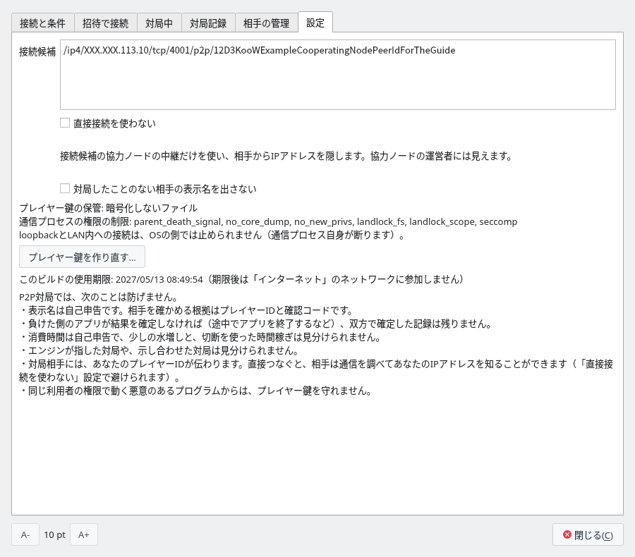
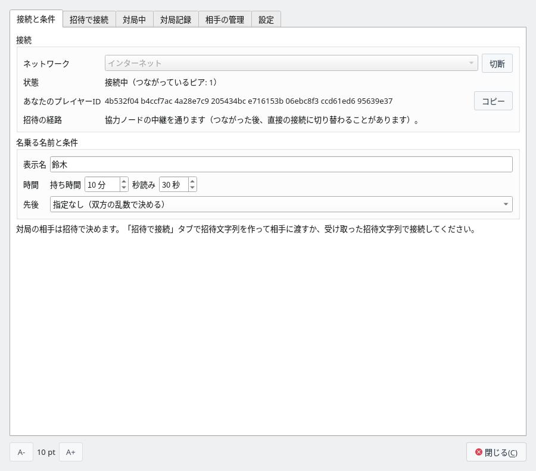
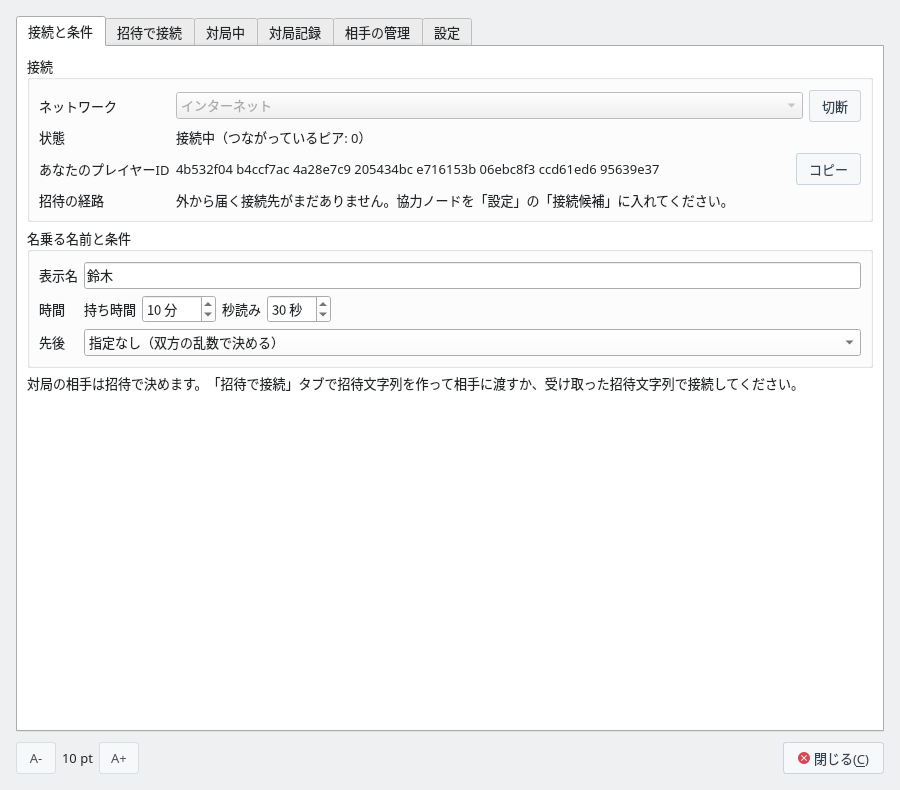
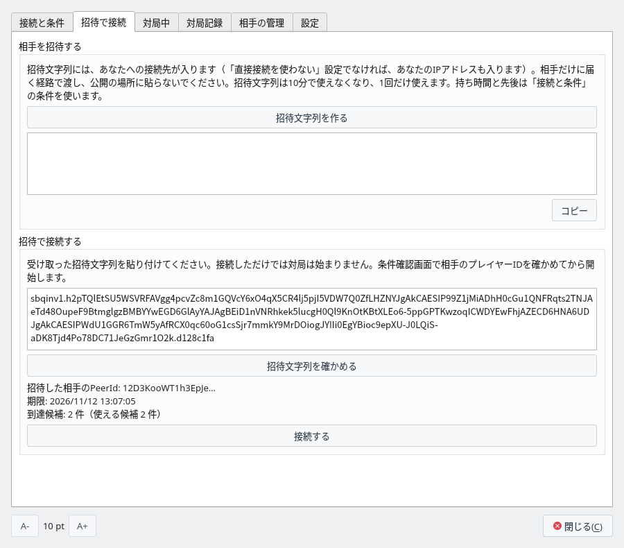
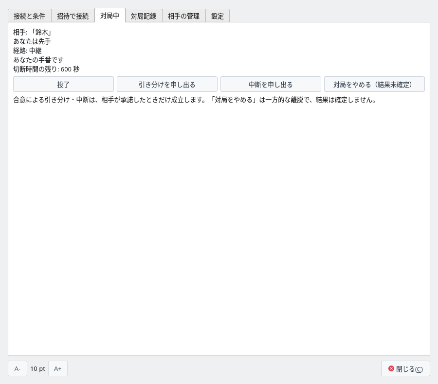
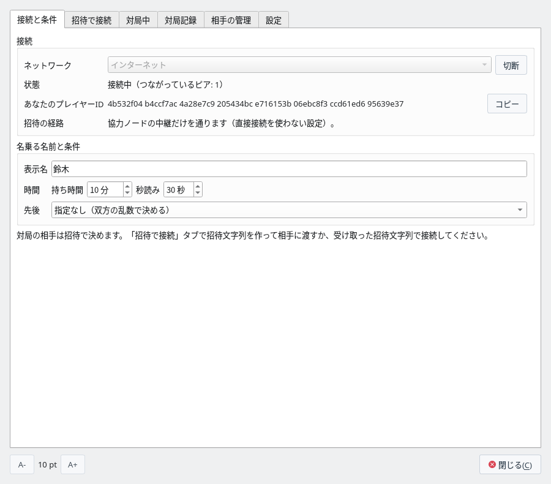

協力ノードを使って対局する
P2P対局で、協力ノードを通して、インターネット上の相手と招待で対局します
P2P対局の準備（プレイヤー鍵・表示名）・画面・対局記録はP2P対局にあります。同じPC・同じLANの相手とは協力ノードなしで対局するをご覧ください。
協力ノードとは
インターネット越しの対局で、2人のアプリが最初につなぐサーバーです
インターネット越しに対局するには、相手のアプリがあなたのPCへつなぐための宛先を、招待文字列に入れておかなければなりません。ところが、家庭や携帯電話の回線のPCの多くはルーターの内側にあり、PC自身は、インターネットから自分がどのアドレスで見えるかを知りません。外から届いた接続が、ルーターで止まることもあります。P2P対局には、相手を探したり宛先を教え合ったりするサーバーもありません。
そこで、インターネットから届く場所で動いている「協力ノード」に最初につなぎ、次の2つを受け持ってもらいます。
- 到達性の確認：インターネットから見たこのPCのアドレスと、外からそこへ届くかを確かめてもらいます。届くなら、そのアドレスを招待文字列に入れ、相手と直接つなぎます。
- 中継：協力ノードに中継の席を取っておき、協力ノードを経由する宛先も招待文字列に入れます。外から直接届かないとき（家庭の回線の多くはこちらです）は、相手はこの宛先で協力ノードを通ってつながります。
協力ノードを入れずに「インターネット」で接続すると、招待文字列に宛先が1つも入らず、相手は接続できません。
- すること：到達性の確認と中継だけです。
- しないこと：指し手や勝敗の判定と、対局記録の保存はしません。中継する通信は双方のアプリの間で暗号化しているので、中身（指し手・プレイヤーID・表示名）も読めません。
- 対局サーバーとの違い：中継を通っていても対局の相手は相手のアプリで、協力ノードはCSA通信対局のサーバーのような役割をしません。違いの表は中継しても協力ノードは対局サーバーにならないをご覧ください。
- 運営者に見えるもの：使う人の IP アドレスと、どの IP アドレスどうしがつないだかです。協力ノードのプログラムは接続元の IP アドレスをログに書きませんが、運営者は通信を調べれば分かります。到達性の確認では、協力ノードから見えたアドレスを1件ずつ確かめてもらうだけで、使う人のLANの中のアドレスは送りません。
- 止める・遅らせる：協力ノードは中継する通信を止めたり遅らせたりはできますが、中身は書き換えられません（書き換えた通信は暗号の検査で見つかり、アプリが受け付けません）。通信が止まったときは、回線が切れたときと同じ扱いになります（回線が切れたとき）。
だれが協力ノードを起動するか
協力ノードは1つあれば足ります。インターネットから届くサーバーを用意できる人が起動し、アドレスを対局する人に教えます
- 1つで足ります：対局する2人に要る協力ノードは、合わせて1つです。2人がそれぞれ起動する必要はありません。
- 2人とも同じアドレスを入れる：起動した人がアドレスを教え、2人とも「設定」タブの「接続候補」に入れます。招待する人が入れていないと、招待文字列に接続先が入りません。「直接接続を使わない」にする人は、相手と同じ協力ノードを入れている必要があります。
- いくつもの組で使える：1つの協力ノードを、何組もの対局者で使えます（中継の席は、同時に128人分まで）。
- アプリには入っていない：アプリには協力ノードのアドレスが入っていないので、対局する人たちで用意します。
協力ノードを起動するのは、インターネットから届くサーバーを用意できる人です。対局する2人のどちらかでも、2人の知り合いでもかまいません。
| 起動する人 | 向いている場合 |
|---|---|
| 対局する2人のどちらか | VPS などのサーバーを持っているか、自宅のルーターでポートを開けられるとき |
| 知り合い（対局しない人） | 研究会やサークルで、1人が協力ノードを動かし、メンバーみんなでそのアドレスを使うとき |
起動する人には、次のものが要ります。
- インターネットから届く IP アドレス：グローバル IP アドレスを持つサーバー（VPS など）か、ポートを開けられる自宅の回線です。携帯電話の回線や、プロバイダーがアドレスの変換を重ねている回線（CGNAT）では、外から届かないので動かせません。
- Linux か macOS：協力ノードのプログラムは、自分の権限を制限してから動きます（Linux は Landlock と seccomp、macOS はサンドボックス）。制限を掛けられない環境では動きません。Windows では動かせません。このページの手順は Linux のサーバーの例です。
- 開けられる TCP のポート1つ：このページの例では 4001 番です。
- 動かし続けること：2人が対局する間は止めないでください。中継で指している対局は、協力ノードが止まると切れ、120秒以内につなぎ直せなければ中断（結果未確定）になります。
運営する人には、使う人の IP アドレスが見えます。使う人に、そのことを伝えておいてください。
協力ノードを起動する
P2P対局の通信プロセス shogiboardq-peer を、協力ノードとして動かします
協力ノードは、P2P対局の通信プロセス shogiboardq-peer を --service を付けて起動したものです。P2P対局を有効にしてアプリをビルドすると、アプリと同じフォルダにできます（インストールすると bin に入ります）。
サーバーには Qt も画面も要りません。Rust（1.85 以降）と C コンパイラがあれば、通信プロセスだけをビルドできます。
$ git clone https://github.com/hnakada123/ShogiBoardQ.git
$ cd ShogiBoardQ
$ cargo build --release --locked -p shogiboardq-peer
$ sudo install -m 755 target/release/shogiboardq-peer /usr/local/bin/$ shogiboardq-peer --service --relay --network sbq-limited-1 \
--identity ~/coop-node.key --listen /ip4/0.0.0.0/tcp/4001
shogiboardq-peer: service started as 12D3KooW…| オプション | 意味 |
|---|---|
--service | 協力ノードとして動かします。 |
--relay | 中継を受け持ちます。家庭の回線どうしの対局には、ほとんどの場合要ります。 |
--network sbq-limited-1 | インターネット越しの対局のネットワークです。アプリの「インターネット」は、この名前のネットワークに参加します。 |
--identity <ファイル> | 協力ノードの識別鍵のファイルです。無ければ作ります（持ち主だけが読み書きできる権限）。同じファイルを使い続ければ PeerId は変わりません。消すと PeerId が変わり、アドレスを伝え直すことになります。 |
--listen <アドレス> | 待ち受けるアドレスとポートです。0.0.0.0 は、すべてのネットワークの口で待ちます。ポートは 4001 でなくてもかまいません。 |
起動すると、service started as の後に PeerId が出ます。止めるときは Ctrl+C を押します。
協力ノードには使用期限はありません（期限で止まるのは、アプリが「インターネット」に参加するときだけです）。
サーバーのファイアウォールで、--listen に書いたポート（TCP の 4001 番）への接続を許可します。VPS では、事業者の管理画面のパケットフィルター（セキュリティグループなど）でも許可します。
# firewalld
$ sudo firewall-cmd --permanent --add-port=4001/tcp
$ sudo firewall-cmd --reload
# ufw
$ sudo ufw allow 4001/tcp自宅のPCで動かすときは、ルーターでそのポートをこのPCへ転送します（ポート開放）。自宅のグローバル IP アドレスが変わると、協力ノードのアドレスも変わります。また、その家の中のPCからこの協力ノードを使うには、ルーターが、自分のグローバル IP アドレスへの折り返しの接続（ヘアピン NAT）に対応している必要があります（「インターネット」では、LANの中のアドレスの協力ノードにはつながないためです）。
協力ノードのアドレスは、次の形です。PeerId は、起動したときに service started as の後に出た文字列です。
/ip4/<サーバーのグローバルIPアドレス>/tcp/4001/p2p/<PeerId>IP アドレスで書きます（ドメイン名は使えません）。このアドレスを、対局する人たちに伝えます。
動いているかは、アプリで確かめられます。「接続候補」に入れて「インターネット」で接続し、「つながっているピア」が 1 以上になり、「招待の経路」に「協力ノードの中継を通ります（…）。」か「直接つなぎます（協力ノードの中継も使えます）。」と出れば、協力ノードと中継を使えています。
サーバーで動かし続けるときは、systemd のサービスにすると、サーバーを再起動したときも自動で起動します。/etc/systemd/system/sbq-coop-node.service を次の内容で作ります（識別鍵は /var/lib/sbq-coop-node に置きます）。
[Unit]
Description=ShogiBoardQ P2P cooperating node
After=network-online.target
Wants=network-online.target
[Service]
DynamicUser=yes
StateDirectory=sbq-coop-node
ExecStart=/usr/local/bin/shogiboardq-peer --service --relay --network sbq-limited-1 \
--identity /var/lib/sbq-coop-node/coop-node.key --listen /ip4/0.0.0.0/tcp/4001
Restart=on-failure
[Install]
WantedBy=multi-user.target$ sudo systemctl enable --now sbq-coop-node
$ journalctl -u sbq-coop-node # PeerId を確かめる対局する2人の準備
2人とも同じ協力ノードを入れて、「インターネット」で接続します
初めてのときは、プレイヤー鍵を作り、表示名を入れます（準備）。
「設定」タブの「接続候補」に、教えてもらった協力ノードのアドレスを1行に1つ入れます（16件まで）。いくつか入れておくと、1つが止まっていても、ほかの協力ノードを使えます。「接続候補」は、次に接続したときから使います（接続中に変えたときは、切断してから接続し直します）。


「設定」タブ：「接続候補」に協力ノードを入れたところ（アドレスの一部は伏せています）
「接続と条件」タブで「ネットワーク」を「インターネット」にして「接続」を押します。協力ノードにつながり、中継の予約が取れると、「招待の経路」に「協力ノードの中継を通ります（つながった後、直接の接続に切り替わることがあります）。」と出ます。予約が取れるまで、少し時間がかかることがあります。


協力ノードにつながったところ
協力ノードを入れずに接続すると、どこにもつながらず（「つながっているピア: 0」）、「招待の経路」に「外から届く接続先がまだありません。…」と出ます。この状態で招待文字列を作っても接続先が入らず、「招待文字列を作る」の下に「この招待文字列には接続先が入っていないので、相手は接続できません。…」と出ます。


協力ノードを入れずに接続したところ
招待して対局する
招待文字列のやり取りは、協力ノードなしの対局と同じです
招待する人が「招待で接続」タブの「招待文字列を作る」で作った招待文字列を、相手だけに届く方法で渡し、相手は「招待文字列を確かめる」を押します。「到達候補: N 件（使える候補 N 件）」の使える候補が1件以上あれば、「接続する」で接続できます。その後の条件確認画面と対局は、協力ノードなしの対局と同じです。
招待文字列には、協力ノードを経由する宛先が入ります（外から直接届くPCなら、そのPCの IP アドレスも入ります）。公開の場所に貼らないでください。
1つの招待文字列でつなげるのは1人・1回だけで、10分で使えなくなります。同時に有効にできるのは4つまでで、指せるのは一度に1局です（詳しくは招待できる人数と回数）。


招待された人：受け取った招待文字列を確かめたところ
相手は、まず協力ノードの中継を通ってつながります。つながるとすぐ、双方のアプリが、それぞれのルーターを通り抜けて直接つなげないかを試します（ホールパンチング）。うまくいけば、「対局中」タブの「経路」が「直接」になります（多くは対局が始まる前に済みます）。
接続ごとに送り元のポートを変えるルーターや、携帯電話の回線のように何段も変換を重ねる回線では、直接つなげず、「中継」のまま対局します。中継でも対局はできますが、指し手は協力ノードを回って届くので、少し遅れることがあります。ShogiBoardQ の協力ノードは中継1本を30分で切るので、長い対局では途中で自動のつなぎ直し（「再接続中」）が入ることがあります。


「経路: 中継」：ルーターが直接の接続を通さなかったとき

このページの画像は、協力ノードと家庭のルーター（NAT）を Docker の中の仮想のネットワークで再現し、2つのアプリで実際に対局して撮りました。「中継」の画像は、接続ごとに送り元のポートを変えるルーターにしたものです。
相手に IP アドレスを見せずに対局する
「直接接続を使わない」にすると、相手には協力ノードのアドレスだけが見えます
ふだんは、相手のアプリとあなたのPCが直接つながります（直接つなげないときだけ、協力ノードの中継を使います）。直接つながると、相手は通信を調べれば、あなたのインターネット上の IP アドレスを知ることができます（画面には出しません）。IP アドレスからは、おおよその地域や、使っている回線の会社が分かることがあります。招待文字列にも、あなたの IP アドレスが入ります。
「設定」タブで「直接接続を使わない」にチェックを付けると、相手とは必ず協力ノードの中継を通してつなぎ、招待文字列にも協力ノードを経由する宛先だけを入れます。相手に見えるのは協力ノードのアドレスだけになり、あなたの IP アドレスが見えるのは、「接続候補」に入れた協力ノードの運営者だけになります。インターネット上の、よく知らない相手と指すときに使います。
- 協力ノードが要ります：「接続候補」に、中継のできる協力ノードを入れてください。入っていないと、「招待の経路」に「中継を使えません。…」と出て、招待しても相手は接続できません。
- 相手と同じ協力ノード：この設定で、受け取った招待文字列で接続するときは、あなたが入れた協力ノードを通る宛先にしかつなぎません。招待した相手も同じ協力ノードを「接続候補」に入れている必要があります（違うと「この招待文字列には、あなたの協力ノードの中継を通る接続先がありません。…」と出ます）。
- ずっと中継：直接の接続を試さないので、対局の間ずっと「経路」は「中継」です。指し手は協力ノードを回って届くので、直接つなぐより少し遅れることがあり、長い対局では途中で自動のつなぎ直し（「再接続中」）が入ることがあります。
この設定は、次に接続したときから使います。接続すると、「招待の経路」に「協力ノードの中継だけを通ります（直接接続を使わない設定）。」と出ます。


「直接接続を使わない」で接続したところ
つながらないとき・使用期限
画面に出る文から、確かめることが分かります
| 出る文・状態 | 確かめること |
|---|---|
| 「つながっているピア: 0」のまま | 「接続候補」のアドレスの誤り、協力ノードが止まっている、サーバーのファイアウォールが閉じている、のどれかです。アドレスは IP アドレスで書きます（ドメイン名と、LANの中のアドレスは使えません）。 |
| 「招待の経路」に「外から届く接続先がまだありません。…」 | 協力ノードにまだつながっていないか、中継の予約がまだ取れていません。少し待っても変わらなければ、上の行を確かめます。 |
| 「招待の経路」に「中継を使えません。…」 | 「直接接続を使わない」にしていて、中継のできる協力ノードが「接続候補」にありません。協力ノードを --relay を付けて起動しているかも確かめます。 |
| 「この招待文字列には、あなたの協力ノードの中継を通る接続先がありません。…」 | 「直接接続を使わない」にしていて、招待した人と協力ノードが違います。同じ協力ノードを入れます。 |
| 「別のネットワークの招待文字列です。」 | 2人の「ネットワーク」が違います。2人とも「インターネット」で接続します。 |
| 「このビルドは使用期限を過ぎたので、…」 | 使用期限を過ぎたビルドです（下の2）。 |
「インターネット」に参加できるのは、アプリをビルドした日から180日までです（「設定」タブの「このビルドの使用期限」に出ます）。P2P対局には古い版を止めるサーバーがないので、不具合や安全上の欠陥が直っていない古い版がネットワークに残り続けないようにしています。期限を過ぎたら、新しい版に更新してください（ソースからビルドしている場合は、ビルドし直します）。
期限があるのは、アプリの「インターネット」だけです。協力ノードと、「ローカル」の対局、保存した記録の確認・検証には、期限はありません。